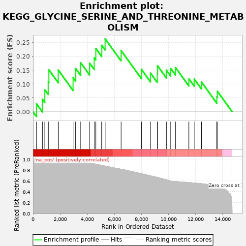
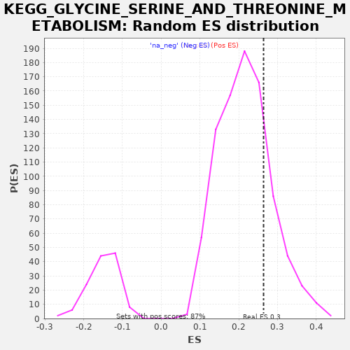

| | | Dataset | drug_embeddings_gsea |
| Phenotype | NoPhenotypeAvailable |
| Upregulated in class | na_pos |
| GeneSet | KEGG_GLYCINE_SERINE_AND_THREONINE_METABOLISM |
| Enrichment Score (ES) | 0.26394257 |
| Normalized Enrichment Score (NES) | 1.2238435 |
| Nominal p-value | 0.21724138 |
| FDR q-value | 0.6351244 |
| FWER p-Value | 1.0 |
Table: GSEA Results Summary

Fig 1: Enrichment plot: KEGG_GLYCINE_SERINE_AND_THREONINE_METABOLISM
Profile of the Running ES Score & Positions of GeneSet Members on the Rank Ordered List
| PROBE | GENE SYMBOL | GENE_TITLE | RANK IN GENE LIST | RANK METRIC SCORE | RUNNING ES | CORE ENRICHMENT | | 1 | SARDH | | | 263 | 1.000 | 0.0284 | Yes |
| 2 | GLYCTK | | | 702 | 1.000 | 0.0449 | Yes |
| 3 | DMGDH | | | 875 | 1.000 | 0.0795 | Yes |
| 4 | SDS | | | 1128 | 1.000 | 0.1087 | Yes |
| 5 | GNMT | | | 1171 | 1.000 | 0.1521 | Yes |
| 6 | AGXT2 | | | 1868 | 1.000 | 0.1510 | Yes |
| 7 | DAO | | | 2963 | 1.000 | 0.1228 | Yes |
| 8 | AOC3 | | | 3147 | 1.000 | 0.1566 | Yes |
| 9 | ALAS2 | | | 3521 | 1.000 | 0.1776 | Yes |
| 10 | SRR | | | 4180 | 0.933 | 0.1759 | Yes |
| 11 | AMT | | | 4523 | 0.915 | 0.1950 | Yes |
| 12 | CHDH | | | 4638 | 0.909 | 0.2293 | Yes |
| 13 | GLDC | | | 5074 | 0.887 | 0.2408 | Yes |
| 14 | MAOB | | | 5329 | 0.874 | 0.2639 | Yes |
| 15 | ALAS1 | | | 6506 | 0.815 | 0.2215 | No |
| 16 | MAOA | | | 8005 | 0.734 | 0.1534 | No |
| 17 | SHMT1 | | | 8675 | 0.696 | 0.1401 | No |
| 18 | GCAT | | | 9176 | 0.666 | 0.1368 | No |
| 19 | PIPOX | | | 9188 | 0.665 | 0.1669 | No |
| 20 | BHMT | | | 9851 | 0.622 | 0.1506 | No |
| 21 | GAMT | | | 10165 | 0.598 | 0.1570 | No |
| 22 | DLD | | | 10519 | 0.588 | 0.1602 | No |
| 23 | CBS | | | 11506 | 0.571 | 0.1194 | No |
| 24 | PSAT1 | | | 11904 | 0.562 | 0.1184 | No |
| 25 | SHMT2 | | | 12439 | 0.549 | 0.1074 | No |
| 26 | CTH | | | 13568 | 0.502 | 0.0538 | No |
| 27 | PSPH | | | 13607 | 0.499 | 0.0744 | No |
Table: GSEA details [plain text format]

Fig 2: KEGG_GLYCINE_SERINE_AND_THREONINE_METABOLISM: Random ES distribution
Gene set null distribution of ES for KEGG_GLYCINE_SERINE_AND_THREONINE_METABOLISM